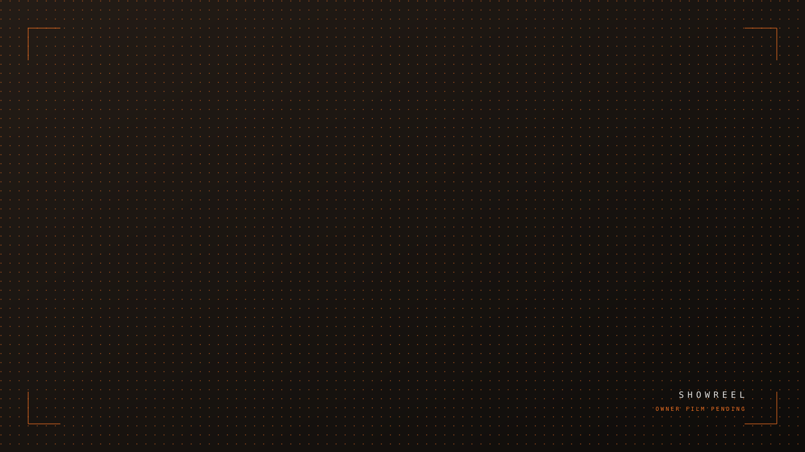

Film
Structural fixture · Film presentation mode · not a portfolio claim
Poster

- Full film
- 60s cut
- 30s cut
- Vertical 9:16
- Trailer
Film
Motion first. The poster is the still that earns the click.
A film project leads with the poster and plays on demand — never autoplaying sound, never a third-party player with someone else's chrome around it. Multiple cuts are first-class: the same film in five lengths is one project, not five.
- Director
- —
- Creative direction
- —
- Cinematography
- —
- Editing
- —
- Production
- —
- Talent
- —